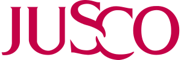

대표 로고대표 브랜드 마크
대표 로고대표 브랜드 마크자스코 JUSCO
자스코(JUSCO)는 이온그룹의 전신인 일본의 종합 슈퍼마켓 체인이다.
최종 업데이트
자스코는 어떤 브랜드인가
저스코(JUSCO)는 현 일본 최대 소매기업 이온(AEON)의 직접 전신으로, 정식 명칭은 재팬 유나이티드 스토어즈 컴퍼니다. 1970년 오카다야·후타기·시로 세 의류 소매업체의 통합으로 일본에서 출범한 종합슈퍼(GMS) 체인이다.
첫 전환점은 2001년 지주·운영사 명칭이 이온으로 바뀐 것이며, 두 번째 전환점은 2010~2011년 일본 내 모든 저스코·사티 점포가 이온 단일 간판으로 통합되며 브랜드가 소멸한 것이다. 통합 직전 그룹은 전 세계 약 4천 개 점포망과 저스코 종합점 약 460곳을 거느린 거대 소매 조직이었다.
자스코는 어떻게 봐야 할까
저스코의 핵심은 1970년 영세 의류상 셋이 규모의 경제를 노려 합친 통합 출범 그 자체다. 창업자 오카다 다쿠야는 미국과 일본 소매업을 관찰한 뒤 대형화가 구매력과 운영 효율의 분수령이라 판단했고, 이 통합 논리가 이후 사티·마이칼 등 경쟁 GMS를 흡수하는 인수 전략으로 확장돼 2003년 이토요카도를 제치고 일본 1위 소매기업 등극으로 이어졌다.
이온으로의 리브랜딩은 단순 개명이 아니라, 의류·식품·생활용품을 한 지붕에 모은 GMS와 식품슈퍼·편의점·드러그스토어·쇼핑몰을 묶는 다포맷 지주체제로의 전환이었다. 한국 독자에게는 한 시대를 풍미한 종합슈퍼가 대형 유통 그룹으로 재편되며 옛 간판을 스스로 내린 사례로, 이마트·홈플러스가 겪은 대형마트 성숙기와 포맷 다각화 흐름과 겹쳐 읽힌다.
자스코는 어떻게 시작되고 성장했나
전후 일본은 의류 중심 소형 점포가 난립하던 시기였고, 그 속에서 1758년 창업해 기모노 등 의류를 다루던 오카다야가 가장 오랜 뿌리를 지녔다. 전쟁으로 폐허가 된 자리에서 다섯 명 직원으로 재건한 오카다 다쿠야는 대형 체인만이 구매·판매·관리에서 우위를 갖는다고 보고, 효고현에 26개 점포를 일군 후타기, 오사카권 15개 점포의 시로에 통합을 제안했다.
1969년 2월 자본금 1억 5천만 엔을 셋이 균등 출자해 본부를 세웠고 실제 합병은 1970년 이뤄졌으며, 사명은 직원 투표로 재팬 유나이티드 스토어즈 컴퍼니로 정해졌다. 1985년 쿠알라룸푸르 다야부미 광장 지하에 첫 해외 점포를 열어 말레이시아에 진출했고, 1996년 광저우 톈허에 중국 본토 1호 GMS를 세웠으며 태국에도 시암 저스코로 들어갔다.
2001년 사명을 이온으로 바꾸고 2010~2011년 점포 간판까지 이온으로 통합했다.
자스코의 브랜드 아이덴티티는 무엇인가
저스코의 정체성은 통합 사명에 응축된다. 흩어진 소매업체를 하나로 묶어 규모와 효율을 추구한다는 가치가 영문 약칭에 그대로 담겼다.
비주얼 아이덴티티는 분홍·마젠타 계열의 영문 로고타입이 중심이었고, 진출국에서는 그 아래 현지 문자를 작게 병기하는 방식을 썼다. 타깃은 의류부터 식품·생활용품까지 한 번에 해결하려는 도시·교외의 일반 가정 소비자였으며, 특히 품질에 민감한 일본 소비자를 겨냥해 1980년대부터 신흥공업국과 손잡고 자체 적합 상품을 개발·수입하는 전략을 폈다.
브랜드 보이스는 친근한 대중 소매 간판으로서 합리적 가격과 폭넓은 구색을 앞세웠다.
자스코의 대표 제품과 서비스는 무엇인가
저스코는 의류·식품·가정용품·생활잡화를 한 매장에 모아 파는 종합슈퍼(GMS) 포맷이 핵심 사업이었다. 점포는 대형 상업복합시설이나 쇼핑몰의 핵심 매장으로 입점하는 경우가 많았고, 말레이시아·중국·태국 등 해외에서는 현지 합작법인을 통한 직영 대형점 형태로 운영됐다.
채널은 오프라인 대형 매장 중심이었다.
자스코는 지금 어떤 상태인가
승계 브랜드는 이온(AEON)이다. 일본을 비롯해 말레이시아·중국·홍콩 등 진출국에서 저스코 간판은 모두 이온으로 교체됐다.
일본에서는 2011년, 말레이시아에서는 2012년, 홍콩·중국 본토에서는 2013년에 전환이 완료됐다. 현재 저스코는 독립 브랜드로는 소멸한 상태이며, 그 사업과 점포망은 이온 그룹으로 승계돼 운영되고 있다.
자스코 로고는 어떻게 변해왔나
대표 로고대표 브랜드 마크
대표 로고 1보관 이미지 1자주 묻는 질문
자스코는 어떤 산업의 브랜드인가요?
자스코는 리테일·커머스 분야의 브랜드입니다.
자스코의 브랜드 아이덴티티는 무엇인가요?
저스코의 정체성은 통합 사명에 응축된다.
자스코의 대표 제품은 무엇인가요?
저스코는 의류·식품·가정용품·생활잡화를 한 매장에 모아 파는 종합슈퍼(GMS) 포맷이 핵심 사업이었다.
자스코는 현재 어떤 상태인가요?
승계 브랜드는 이온(AEON)이다.
자스코의 공식 웹사이트는 어디인가요?
자스코의 공식 웹사이트는 https://www.aeon.info/ 입니다.
출처와 검증
자스코 관련 참고: 공식 웹사이트. 브랜드명은 한글과 원어를 함께 표기하되 데이터에 없는 표기는 만들지 않습니다. 기원 국가·설립연도는 검수된 정의문에서 확인된 값을 우선하고, 없을 때만 공식 웹사이트 URL이 일치하는 위키데이터 개체의 값을 씁니다.